Social Network Analysis
Workshop 1. Intro to network analysis in R
Blas Kolic & Esteban Moro
IBiDat uc3m-Santander | IMDEA Networks
Master in Computational Social Science
Last updated 2024-04-02
Objective
The objective of this workshop is to give a small introduction to the igraph analysis library in R for graphs. We will learn:
- The basic concepts of graph analysis using
igraph - To visualize graphs using the libraries
igraph,ggraphandvisNetwork - To export graphs and visualize them using
gephi
Network Analysis in R
In R there are many options to study graphs. We will use the igraph library http://igraph.org/
- Is an open-sourced package to build, manipulate and study graphs.
- Implements the newest and most efficient algorithms.
- Supports different graph formats.
- Implemented in
C,pythonand of courseR - Has many options to visualize graphs.
We will also use the ggraph package to visualize graphs using the ggplot grammar and the visNetwork package which allows interactive visualization of graphs https://datastorm-open.github.io/visNetwork
- It is based on the
vis.jslibrary - Based on
htmlwidgets - Works in RStudio and many browsers
Introduction to igraph: the graph object
The basic object in igraph is the graph object
When defined, graphs can be directed or not. igraph cannot handle mixed graphs
Introduction to igraph: the graph object
Basically, the graph object is a wrapper for the nodes and edges data frames.
+ 4/4 edges from f375025:
[1] 1--2 2--3 3--4 3--5+ 5/5 vertices, from f375025:
[1] 1 2 3 4 5Each of these sets/tables can have different attributes
By giving weights to the edges, the graph becomes weighted
Building a graph from data
- From
data.frames
where edges and nodes are data.frames:
- First two columns of edges contains the edges names or ids
- First column of
nodescontains the names of the nodes. They have to coincide with the ones inedges - Rest of the columns in
edgesandnodesare considered attributes of edges and nodes.
edges <- data.frame(from=c(1,1,2,2,3,5),to=c(2,3,3,4,2,4),peso=c(1,1,1,2,2,3))
nodes <- data.frame(id=c(1,2,3,4,5),nombre=c("juan","clara","luis","raul","alex"))
g <- graph.data.frame(edges,vertices=nodes)
gIGRAPH fab6233 DN-- 5 6 --
+ attr: name (v/c), nombre (v/c), peso (e/n)
+ edges from fab6233 (vertex names):
[1] 1->2 1->3 2->3 2->4 3->2 5->4Building a graph from graph files or packages
The read.graph function is able to read graphs in various formats
We can also export our graph in different formats
Finally we have some packages with loaded graphs
IGRAPH 64ec693 D--- 184 125409 -- Enron email network
+ attr: LDC_names (g/c), LDC_desc (g/c), name (g/c), Citation (g/c),
| Email (v/c), Name (v/c), Note (v/c), Time (e/c), Reciptype (e/c),
| Topic (e/n), LDC_topic (e/n)
+ edges from 64ec693:
[1] 25->154 25->154 30-> 30 30-> 30 30-> 30 30-> 30 39-> 39 52-> 67
[9] 52-> 67 52-> 67 52-> 67 61->100 61->100 61->163 61->163 61->166
[17] 61->166 61->170 64-> 59 64-> 59 64-> 64 64-> 64 64->147 64->147
[25] 64->164 64->164 64->168 66-> 66 66-> 66 67->129 67->129 67->129
[33] 67->129 93-> 10 93-> 10 93-> 10 93-> 10 93-> 39 93-> 39 93-> 93
[41] 93-> 93 93-> 93 93-> 93 93->124 93->124 100-> 61 100-> 61 115->115
+ ... omitted several edgesExercise 1: The Starwars network
Generate the StarWars characters’ graph using the interactions between characters. The data can be downloaded from: http://evelinag.com/blog/2015/12-15-star-wars-social-network/index.html#how or https://github.com/evelinag/StarWars-social-network
Use
The file
/networks/starwars-full-interactions-allCharacters-merged.jsonin that github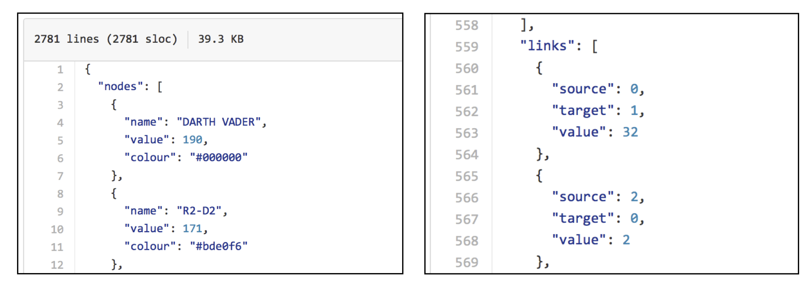
The
jsonlitepackage in R to import the interactions file and create the tablesnodosyenlacesGenerate the graph
Exercise 1: The Starwars network
- Import the json file and create the
nodosandenlacestables
- Create those two tables from the
netobject (list)
- Have a look at the tables
Exercise 1: The Starwars network
- There are 111 nodos
- The ids in the
enlacesfile are numeric and run from 0 to 110. - Remember that the first column in the table
nodosmust contain the same ids that the firs two columns inenlaces. This is why we add a new colum to this file
- With that we can generate the graph
gSW <- graph.data.frame(enlaces,vertices=nodos,directed=F)
gSW
## IGRAPH 359f972 UN-- 111 444 --
## + attr: name (v/c), value (v/n), colour (v/c), value (e/n)
## + edges from 359f972 (vertex names):
## [1] DARTH VADER--R2-D2 DARTH VADER--CHEWBACCA
## [3] DARTH VADER--WATTO DARTH VADER--QUI-GON
## [5] DARTH VADER--PADME DARTH VADER--SEBULBA
## [7] DARTH VADER--JAR JAR DARTH VADER--JIRA
## [9] DARTH VADER--SHMI DARTH VADER--C-3PO
## [11] DARTH VADER--KITSTER DARTH VADER--WALD
## [13] DARTH VADER--OBI-WAN DARTH VADER--JABBA
## [15] DARTH VADER--GREEDO DARTH VADER--CAPTAIN PANAKA
## + ... omitted several edgesExercise 1: The Starwars network
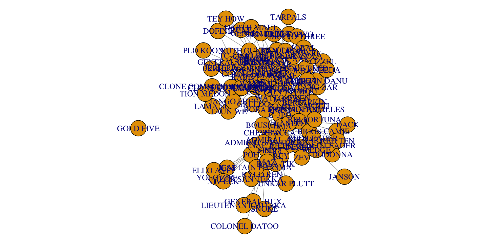IDs of nodes and edges
- Vertex and edges sequences are basically numeric vectors containing vertex/edge ids.
- When creating the graph, the vertex ids can be numeric or character
- Vertex (edge) internal ids run from 1 to \(|V|\) (\(|E|\)). Internal ids are used typically in functions. Original ids are stored in
V(g)$name
Graph operations: subsetting
- Nodes that are neighbors of
a
- Edges between groups of nodes (direction matters)
Graph operations: subsetting
We can also use specific igraph functions for this
+ 6/111 vertices, named, from 359f972:
[1] R2-D2 CHEWBACCA QUI-GON NUTE GUNRAY OBI-WAN EMPEROR + 6/444 edges from 359f972 (vertex names):
[1] DARTH VADER--R2-D2 DARTH VADER--CHEWBACCA DARTH VADER--QUI-GON
[4] DARTH VADER--NUTE GUNRAY DARTH VADER--OBI-WAN DARTH VADER--EMPEROR Graph operations: operations
We can modify the graph
- Adding/deleting vertices/edges
See add.edges, add.vertices, delete.edges
- Simplify the graph: remove loops and multiple edges
Graph operations: subgraphs
- Subgraphs: only specified vertices and eges between them are kept
Graph operations: subgraphs
- We can also get only the neighborhood of a given node
Graph operation: components
Sometimes graphs are disconnected. In igraph we can get the connected components using
Graph operation: components
We can get the largest component (giant component)
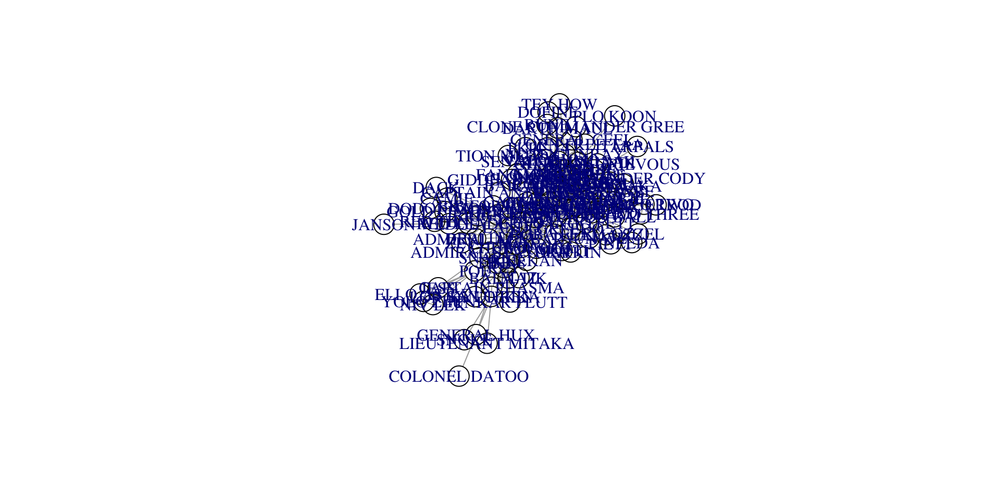Graph analysis
- Count the number of edges, vertices
- Calculate the in/out/all degree of vertices (and show the distribution)
DARTH VADER R2-D2 CHEWBACCA
52 22 19
BB-8 QUI-GON NUTE GUNRAY
12 27 16
PK-4 TC-14 OBI-WAN
2 5 36
DOFINE RUNE TEY HOW
3 4 3
EMPEROR CAPTAIN PANAKA SIO BIBBLE
22 9 8
JAR JAR TARPALS BOSS NASS
24 1 6
PADME RIC OLIE WATTO
34 7 6
SEBULBA JIRA SHMI
6 3 8
C-3PO DARTH MAUL KITSTER
35 4 9
WALD FODE/BEED JABBA
5 3 14
GREEDO VALORUM MACE WINDU
4 4 13
KI-ADI-MUNDI YODA RABE
9 17 5
BAIL ORGANA GENERAL CEEL BRAVO TWO
17 4 3
BRAVO THREE CAPTAIN TYPHO SENATOR ASK AAK
3 6 7
ORN FREE TAA SOLA JOBAL
3 4 4
RUWEE TAUN WE LAMA SU
4 4 2
BOBA FETT JANGO FETT OWEN
10 4 7
BERU CLIEGG COUNT DOOKU
8 5 10
SUN RIT POGGLE PLO KOON
6 6 1
ODD BALL GENERAL GRIEVOUS FANG ZAR
2 3 4
MON MOTHMA GIDDEAN DANU CLONE COMMANDER GREE
10 4 1
CLONE COMMANDER CODY TION MEDON CAPTAIN ANTILLES
4 1 3
LUKE CAMIE BIGGS
26 2 8
LEIA MOTTI TARKIN
25 3 3
HAN DODONNA GOLD LEADER
26 3 5
WEDGE RED LEADER RED TEN
8 7 2
RIEEKAN DERLIN ZEV
4 2 2
PIETT OZZEL DACK
4 2 1
JANSON NEEDA LANDO
1 2 11
JERJERROD BIB FORTUNA BOUSHH
1 3 4
ADMIRAL ACKBAR LOR SAN TEKKA POE
11 4 16
KYLO REN CAPTAIN PHASMA FINN
10 7 14
UNKAR PLUTT REY GENERAL HUX
2 10 5
LIEUTENANT MITAKA BALA-TIK SNOKE
2 5 2
MAZ SNAP ADMIRAL STATURA
5 8 7
YOLO ZIFF COLONEL DATOO ELLO ASTY
4 1 4
JESS NIV LEK
5 4 Graph analysis
Distributions
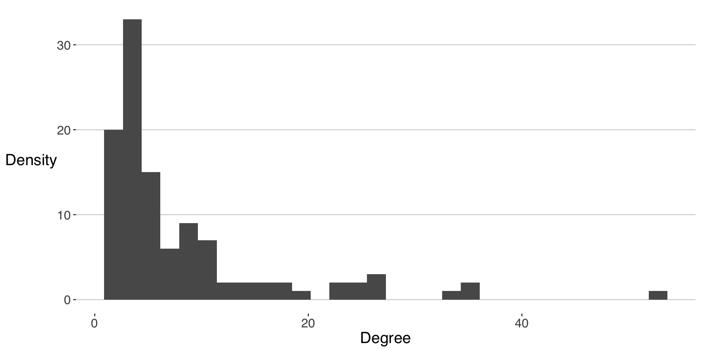Graph analysis
- Calculate the diameter of the graph
- Calculate the transitivity of the graph
- Calculate the assortativity (degree) of the graph
Graph communities
A network is said to have a community structure if nodes can be grouped into set of nodes such that each set in densely connected internally
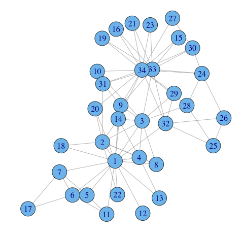 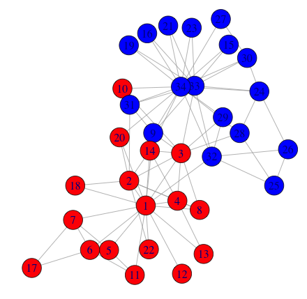
Graph communities
There are many algorithms based on different clustering, function and optimization ideas. One key idea recently introduces is that of the modularity of a partition. In igraph we have
- Algorithms based on hierarchical clustering
cluster_edge_betweennessremove edges of high betweenness since they seem to be between communities.cluster_fast_greedyjoin nodes/groups with local greedy optimization of the modularity.cluster_louvainhierarchical optimization of the modularity by joining nodes/groups.cluster_leidensimilar to the Louvain algorithm but faster and higher quality solutions.
- Algorithms based on matrix algebra
cluster_leading_eigenuse the leading vector of the modularity matrix.
- Algorithms based on process methods
cluster_label_propfind consensus in majority voting of labels in the neighborhood of a vertex.cluster_walktrapshort random walks tend to stay in the same community.cluster_infomapfind community structure that minimizes the expected description length of random walker trajectories.
Graph communities
Not all the methods are equal and/or valid and/or efficient
| Algorithm | Directed | Weighted | Complexity |
|---|---|---|---|
cluster_edge_betweenness |
TRUE | TRUE | \(|V| |E|^2\) |
cluster_fast_greedy |
FALSE | TRUE | \(|V| |E| \log |V|\) |
cluster_louvain |
FALSE | TRUE | \(|V|+ |E|\) |
cluster_leading_eigen |
FALSE | FALSE | \(c|V|^2 + |E|\) |
cluster_label_prop |
FALSE | TRUE | \(|V|+ |E|\) |
cluster_walktrap |
TRUE | TRUE | \(|V|^2 |E|\) |
cluster_infomap |
FALSE | TRUE | \(|V| (|V|+ |E|)\) |
Graph communities
Let’s see an example with the famous Karate Club network and the fast.greedy
- We get the following partition
- Check the goodness of the partition
Graph communities
- We can show the graph and communities together
Graph communities
Different algorithms produce different results
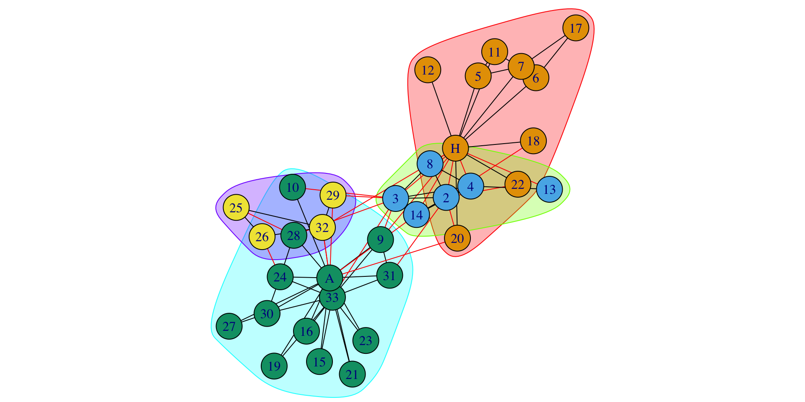Graph communities
We can compare different the communities found:
[1] 0.688021nmi is one of the methods to compare communities.
Exercise 1
Calculate the communities in the StarWars network using the Louvain method. How good is the partition found? Which is the community of Darth Vader?
Use
cluster_louvainto calculate the communitiesmembershipto get the partitionmodularityto see how good is the partition
Exercise 1
Get the communities with and without the weights
Let’s see how are the communities
Exercise 1
How good are the communities?
Plot them
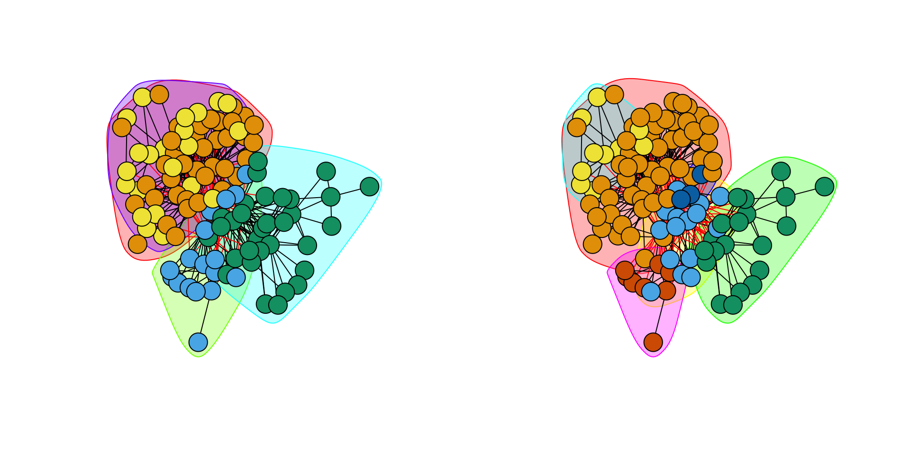Exercise 1
Find Darth Vader’s community:
# A tibble: 1 × 2
name value
<chr> <membrshp>
1 DARTH VADER 1 Who belongs to that community?
Centrality
Not all nodes in the network are equally important. igraph has several ways to calculate centrality of nodes and edges
- PageRank: calculates Google’s PageRank for vertices
DARTH VADER OBI-WAN C-3PO PADME LUKE QUI-GON
0.05368943 0.03706176 0.03339089 0.03285987 0.02792112 0.02608201 - Closeness: distance (steps) to any other vertex
Centrality
- Betweenness: the number of shortest paths going through a vertex/edge
DARTH VADER OBI-WAN C-3PO LUKE HAN POE
1704.2018 975.1258 833.7129 785.0163 623.5365 437.5932 - We can use also the weighted versions to calculate the paths or rank
Exercise 2
Calculate the centrality of the characters in the StarWars network using the degree, betweenness and page rank.
Who are the most important characters according to those centrality metrics?
How are those centrality metrics correlated across the network?
Exercise 2
Calculate different centrality metrics. We are going to try also the degree strength which is the sum of the weights of the links from/to a node:
Put them together
cent_degree cent_streng cent_betw cent_page
DARTH VADER 52 309 1199.09534 0.07172250
R2-D2 22 279 108.06440 0.04890130
CHEWBACCA 19 297 341.42822 0.04722319
BB-8 12 72 56.48961 0.01418203
QUI-GON 27 152 388.33956 0.03419694Exercise 2
We can see who are the most central according to different metrics
cent_degree cent_streng cent_betw cent_page
HAN 26 360 490.2382 0.05850435
C-3PO 35 310 1077.7820 0.05284785
DARTH VADER 52 309 1199.0953 0.07172250
CHEWBACCA 19 297 341.4282 0.04722319
R2-D2 22 279 108.0644 0.04890130 cent_degree cent_streng cent_betw cent_page
DARTH VADER 52 309 1199.0953 0.071722501
C-3PO 35 310 1077.7820 0.052847848
OBI-WAN 36 261 855.7510 0.057058540
LEIA 25 258 792.2414 0.042098680
JABBA 14 22 585.3337 0.005808442Exercise 2
How are these measures of centrality correlated? We are going to use the Kendall method that are used to estimate rank-based measured of association.
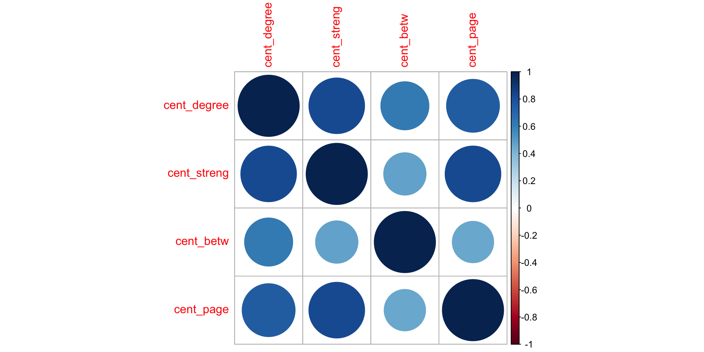As we can see the major differences happen with betweenness and the rest.
Graph visualization
- Visualizing a graph involves calculating a layout for displaying the nodes in a two-dimensional figure.
- But this is a complicated task, since generally a graph is not a 2D structure.
- Thus, all layouts are projections of the graph object. There are many of them using mathematical and/or computer science methods.
- A good layout is such that:
- Minimizes the number of crossing edges.
- Minimizes the length of edges.
Graph visualization
Basically there are different groups of methods (by strategy) to obtain a good layout
Force-based layout: use physical forces (typically spring-like) between nodes along edges (attractive) and between nodes (repulsive) and find a minimum of their energy.
layout.fruchterman.reingoldlayout.kamada.kawailayout.springlayout.lgllayout.drllayout.graphopt
Spectral methods:
layout.svd
Special graphs: for example, tree-like layout for trees.
layout.reingold.tilford
Ordered: place nodes in defined structures
layout.randomlayout.circlelayout.sphere
Graph visualization
Caution: Computing a layout is a high intensive task. For example in force-based layouts it takes to evaluate \(|E|\) attractive forces along edges and \(|V|^2\) repulsive forces between nodes for each step of the minimization algorithm.
Example: running time to produce the layout of barabasi.game(n) with different number of nodes n.
Graph visualization
We can change the visualization by changing colors, size, font, etc. of nodes and edges
vertex.label = ""sets labels to nothingvertex.size = 2set vertex symbol size to 2vertex.color = colorsset vertex color to that ofcolorsvectoredge.color = colorssame for edgesedge.width = wijset edge width to vectorwijedge.arrow.size = 0.5set size of arrows to 0.5edge.curved = Tdraw curved edges
Graph visualization
When visualizing a medium/large graph we can use some tricks to get more informative visualizations:
- Make the size of the nodes proportional to their centrality/degree
Graph visualization
- The width of the edges proportional to the
value(or strength) attribute
Graph visualization
- The color of the nodes as in the
colourattribute
Graph visualization
- Show only the nodes’ label for those with degree \(\geq\) 10
Graph visualization
- Change the font family and size for the nodes’ labels
Graph visualization
We can use also the ggraph and graphlayouts packages to visualize networks using the ggplot grammar
Graph visualization
Some of the igraph layouts work here too. And we can use some of the grammar in ggplot
Graph visualization
We can change the type of edges. Visual properties for nodes and edges work too:
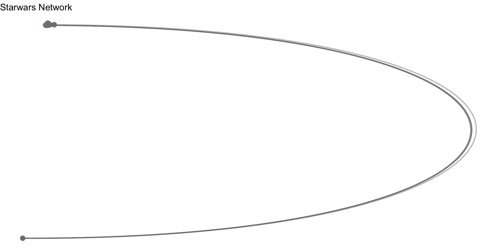Graph visualization
The ggraph package also uses the traditional ggplot2 way of mapping aesthetics
Graph visualization
We can add a layer with node labels using geom_node_text() or geom_node_label() which correspond to similar functions in ggplot2.
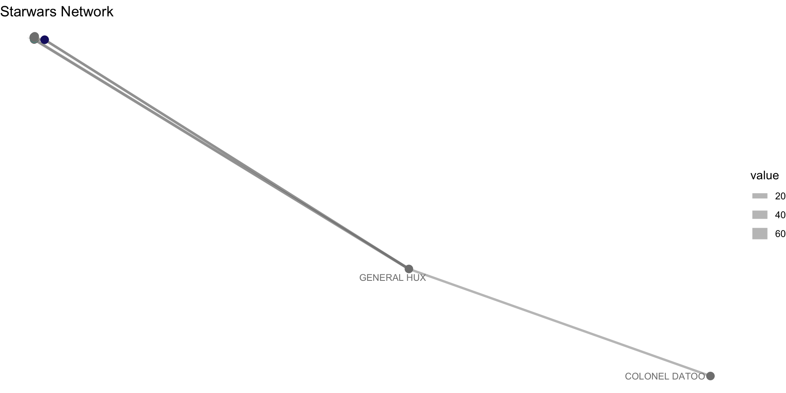Interactive Graph visualization
Another (more recent) library for graph visualization is visNetwork, which allows interactive visualization. The function visNetwork needs two data frames
Interactive Graph visualization
We can even highlight the neighborhood of a node or selecte a node from a list
Interactive Graph visualization
Or use colors for the nodes
Graph visualization
Check https://datastorm-open.github.io/visNetwork/ for more options of the
visNetworkpackageAlthough
visNetworkworks well for small graphs, it is not recommended to plot very graphs (\(> 1000\) nodes)For those sizes we will use
Gephi, an external applicationTo do that we expor the graph to work on
Gephi
Visualization using Gephi
Gephi is probably the most used tool to visualize graphs
- Is an interactive visualization software
- includes some analysis metrics.
- Works in Windows Linux and MacOSX.
- It is the photoshop for graphs
- http://gephi.org
Visualization using Gephi
Open Gephi -> Create new project
Visualization using Gephi
Load gSWGC.graphml
Visualization using Gephi
Choose layout (best is Atlas)
Visualization using Gephi
Change properties of nodes/edges
Visualization using Gephid
Once you are finished with the layout and appearance, got to “Preview” (and Refresh). You can further modify the graph and export it using PDF/PNG/SVG
And you can export the graph using PDF/PNG/SVG
Visualization using Gephi
Gephi is really good for large graphs
References
- General resources:
- About
igraph- Material online
- Libros
- Visualization of networks
Graph Models
The library igraph contains a number of functions to create networks from statistical models.
- Erdos-Renyi (or GNP) graph with 20 nodes and probability of a link \(p= 0.1\)
- Erdos-Renyi (or GNP) graph with 20 nodes and 40 links
- Prefferential attachement (Barabasi-Albert) network with 20 nodes
- Small-World network in 1 dimension with 20 nodes, with size of local neighborhood equal to 4 and rewiring probability \(p=0.1\).
- Configuration model with the same degrees as in the karate network
Graph Models
require(patchwork)
g1 <- ggraph(g_er,layout="kk")+geom_edge_link()+geom_node_point()+theme_void()+labs(title="Erdos-Renyi")
g2 <- ggraph(g_pa,layout="kk")+geom_edge_link()+geom_node_point()+theme_void()+labs(title="Pref. Attachment")
g3 <- ggraph(g_sw,layout="kk")+geom_edge_link()+geom_node_point()+theme_void()+labs(title="Small-World")
g4 <- ggraph(g_ds,layout="kk")+geom_edge_link()+geom_node_point()+theme_void()+labs(title="Degree Seq.")
g1 + g2 + g3 + g4Graph Models
Note that this functions generate a sample from the distribution of models. That is, since models like Erdos-Renyi, Pref. Attachement, Small World or Degree Sequence are stochastic, everytime we call them, they give a different realization of the model:
g1 <- ggraph(sample_gnp(20,0.1),layout="kk")+geom_edge_link()+geom_node_point(col="blue")+theme_void()
g2 <- ggraph(sample_gnp(20,0.1),layout="kk")+geom_edge_link()+geom_node_point(col="red")+theme_void()
g3 <- ggraph(sample_gnp(20,0.1),layout="kk")+geom_edge_link()+geom_node_point(col="orange")+theme_void()
g4 <- ggraph(sample_gnp(20,0.1),layout="kk")+geom_edge_link()+geom_node_point(col="green")+theme_void()
g1 + g2 + g3 + g4Graph models
Graph statistical models are use to test statistical hypothesis. For example, is the transitivity/clustering that we get in a network statistically significant. In this sense graph statistical models are null models for those test. Typical null models are
Erdos-Renyi models with the same number of nodes and links as the network we are testing
Degree-sequence models with the same degree distribution
Choosing a different null model test different statistical hypothesis. For example: is the clustering in our network just due to the large number of links that we have? Are the communities we find in the network due to the degree sequence?
Graph models
Let’s see an example of statistical test in networks. Suppose we use the Enron network (simplified) and get its transitivity/clustering
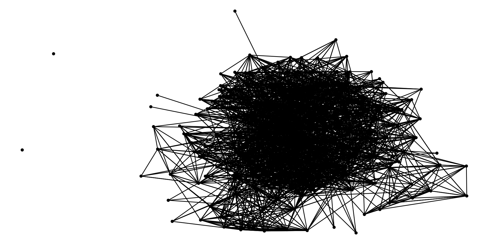Graph models
But the network is very heterogeneous in degree. In the Enron company some people are more connected than others
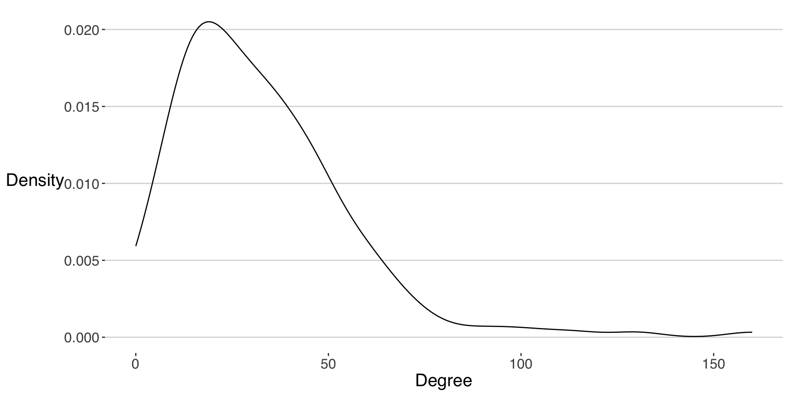Is the large transitivity in the network just a mere consequence of the large heterogeneity in degree?
Graph models
Let’s compare the transivity in the real newtork with the one from a degree-sequence realization with the same degree distribution as the real network
It is close. Are they different statistically speaking? In order to test this, we need to generate the distribution of clustering values from the degree-sequence models with the same degree sequence as the enron network. Let’s do it for 1000 realizations
Graph models
And now we compare the actual value from the enron network with the distribution of values from the degree-sequence model
ggplot() + geom_density(aes(x=trans_model)) +
geom_vline(xintercept = transitivity(enron_sim),linetype=2)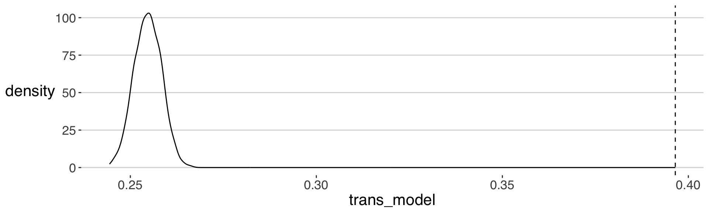
Assuming the distribution for the degree-sequence is Gaussian, then the p-value of our hypothesis is